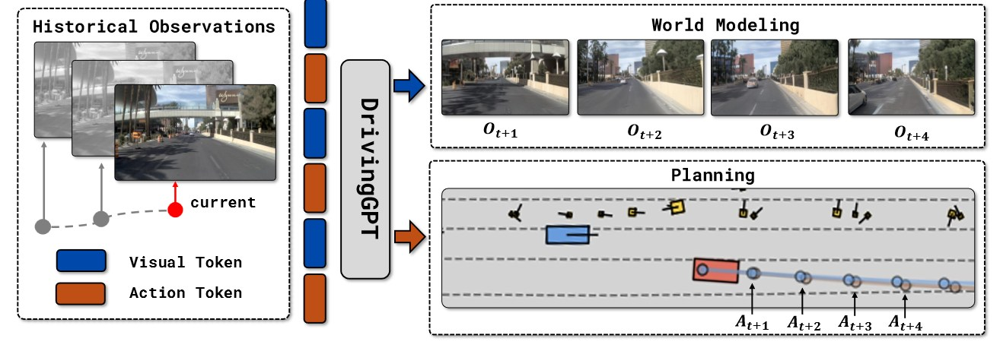
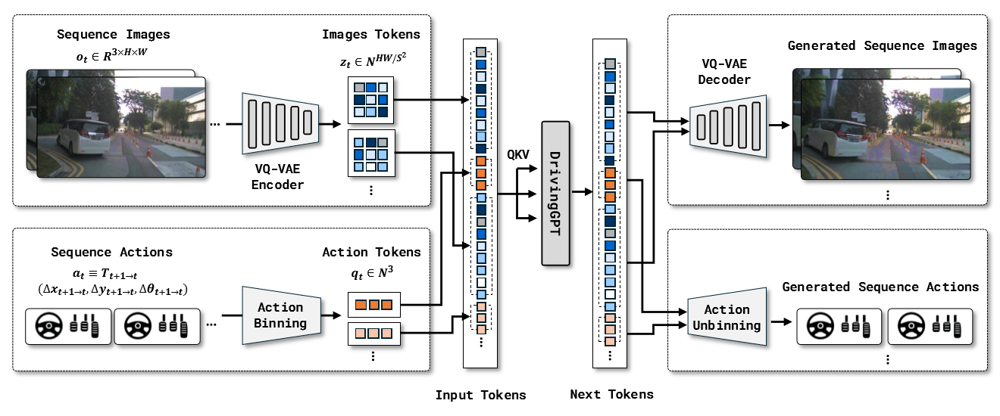
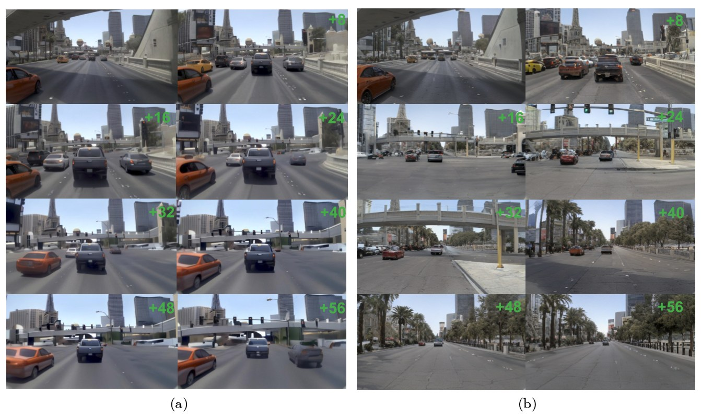
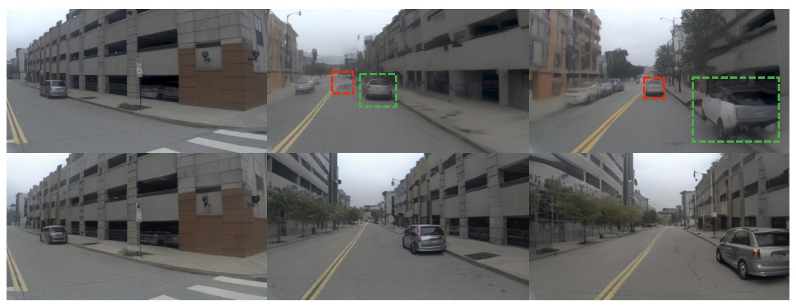
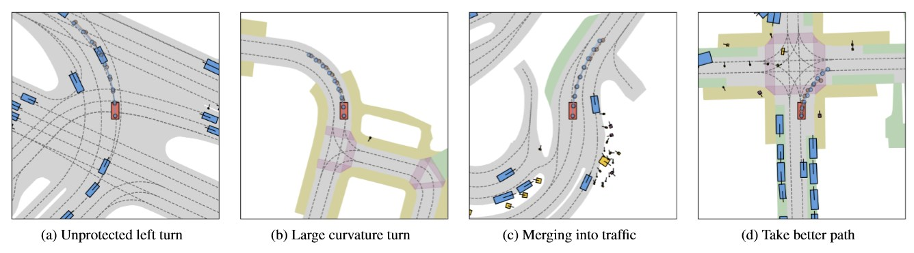
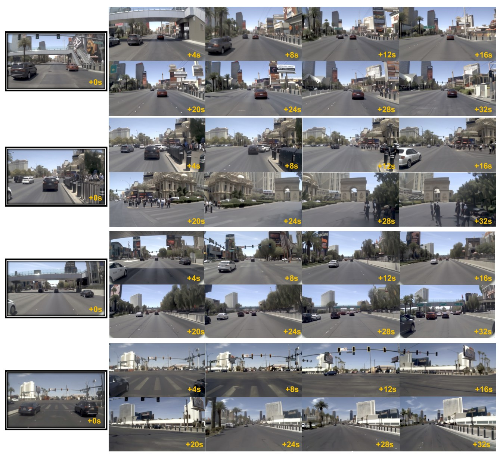
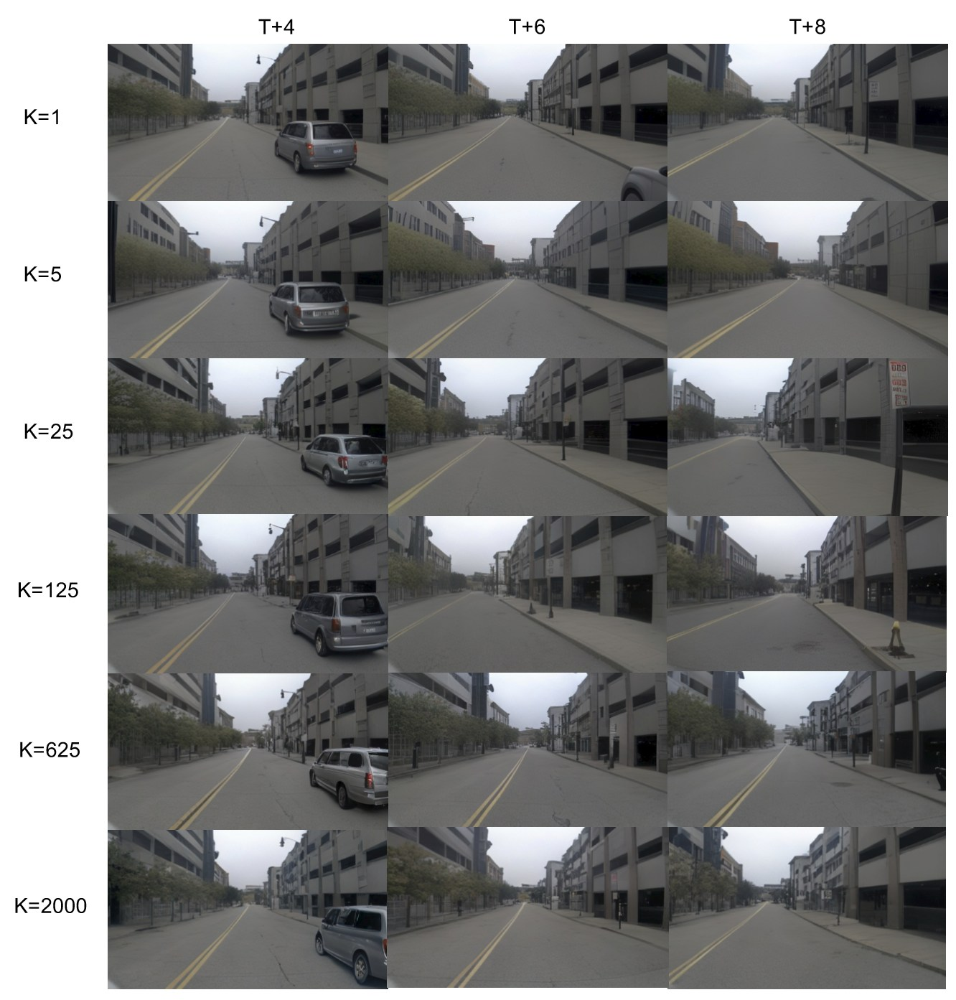

目次
DrivingGPT: Unifying Driving World Modeling and Planning with Multi-modal Autoregressive Transformers
Yuntao Chen3、Yuqi Wang1,2、Zhaoxiang Zhang1,2,3
1 中国科学院 自動化研究所 パターン認識新研究室（New Laboratory of Pattern Recognition）
2 中国科学院大学 人工知能学院
3 中国科学院 香港創新研究院（HKISI, CAS）人工知能・ロボティクスセンター
プロジェクトページ：https://rogerchern.github.io/DrivingGPT
arXiv:2412.18607v1 [cs.CV]、2024年12月24日
翻訳について：原文 PDF は
46_DrivingGPT_2412.18607.pdf（全 15 ページ）。本文、図の説明、図中ラベル、表、脚注、付録を訳出し、論文タイトルと参考文献は原文のまま掲載。図は原図を掲載し、英語ラベルの日本語訳を併記した。数式・数値・引用番号・コードの識別子は原文を維持。原文の記述に関する補足は「訳注」と明示し、本文と区別している。

図1：運転を次トークン予測として扱う。DrivingGPT は、運転シーケンスの離散的な視覚トークンと行動トークンを交互に並べたものを統一された運転言語として扱い、マルチモーダル自己回帰 Transformer を用いて、過去の運転トークンを与えた標準的な次トークン予測により、世界モデリングとエンドツーエンド計画を同時に行う。計画（Planning）中の赤い矩形は自車を表し、青い線は生成された軌道、茶色の線は人間の運転軌道である。
図中ラベル：Historical Observations＝過去の観測、current＝現在、Visual Token＝視覚トークン、Action Token＝行動トークン、World Modeling＝世界モデリング、Planning＝計画
要旨
世界モデルに基づく探索と計画は、人間レベルの物理的知能へ至る有望な道として広く認識されている。しかし、現在の運転世界モデルは主に映像拡散モデルに依存しており、これは視覚的な生成に特化している一方で、行動のような他のモダリティを取り込む柔軟性に欠ける。これに対し、自己回帰 Transformer はマルチモーダルデータのモデリングにおいて卓越した能力を示してきた。本研究は、運転モデルのシミュレーションと軌道計画の両方を、単一のシーケンスモデリング問題に統一することを目指す。我々は、画像トークンと行動トークンを交互に並べたマルチモーダル運転言語を導入し、標準的な次トークン予測によって世界モデリングと計画を同時に学習する DrivingGPT を開発する。我々の DrivingGPT は、行動条件付き映像生成とエンドツーエンド計画の両方で高い性能を示し、大規模な nuPlan および NAVSIM ベンチマークにおいて強力なベースラインを上回る。
1 はじめに
運転世界モデル［19, 27, 31, 60, 63, 74］は、モデルベースの探索と計画が人間レベルの物理的知能へ至る不可欠な道であると広く考えられていることから、大きな注目を集めている［34］。これらのモデルは、学習データの拡張、稀なシナリオの生成、不測事態に備えた計画（contingency planning）など、複数の目的に役立つ。現在の世界モデルの多くは、映像生成基盤モデルの汎化能力を活用するため、既存の拡散モデル［1, 46］をファインチューニングすることで開発されている。テキスト、レイアウト、運転操作といった制御信号は、主に 2 つの方法で取り込まれる。すなわち、拡散モデルの空間特徴と制御信号特徴との間のクロスアテンション［36］か、AdaLN［42］や FiLM［43］のようなチャネル単位の特徴変調手法である。
運転世界モデルが進歩しているにもかかわらず、根本的な課題が残っている。すなわち、微分可能な枠組みの中で世界モデリングと計画を継ぎ目なく統合することは大部分が未解決のままであり、そのために微分可能なモデルベース計画の潜在能力が十分に発揮されていない。現在の世界モデルは主に映像拡散アーキテクチャに基づいており、テキストや行動シーケンスといった複数のモダリティを生成する能力が制限されている。その結果、拡散モデルの枠組みの中で運転計画と世界モデリングの真のエンドツーエンド統合を実現することは、依然として大きな技術的課題である。これらの限界が、マルチモーダルな入力と出力を自然に扱い、エンドツーエンドで微分可能な計画を可能にする代替アーキテクチャを探る動機となった。
拡散モデルとは対照的に、次トークン予測を学習目標とする自己回帰 Transformer は、言語モデリング［5, 16, 53, 58］、視覚質問応答［38, 59］、画像生成［41, 45, 49, 57, 72］、映像予測［20, 61, 68, 69］、逐次的意思決定［9, 47］、ロボットマニピュレーション［3, 4, 8, 40］を含む幅広いタスクにおいて、卓越したモデリング能力を示してきた。逐次データと複数のモダリティを扱う自己回帰 Transformer の自然な能力は、統合されたモデルベース運転プランナーにとって特に有望である。
本研究では、運転タスクにおける世界モデリングと軌道計画の両方に、自己回帰 Transformer のモデリング能力を活用することを目指す。具体的には、視覚的な運転世界モデリングとエンドツーエンドの運転軌道計画を、統一されたシーケンスモデリング問題として定式化する。運転映像のフレームは、事前学習済みの VQ-VAE［57］を用いて離散トークンに変換する。同様に、運転軌道をフレーム間の相対行動に変換し、それを離散的なビンに量子化する。画像と行動の語彙を統一し、画像トークンと行動トークンをフレームごとに交互に並べることで、マルチモーダル運転言語を設計する。フレーム単位の 1D 回転位置埋め込み（rotary embedding）［48］を備えた Llama 型の DrivingGPT アーキテクチャを用い、標準的な次トークン予測によってこのマルチモーダル運転言語をモデル化する。DrivingGPT は、世界モデリングと計画の両タスクにわたって高い性能を示す。映像生成においては、我々の手法は強力な SVD ベースライン［1］を上回り、FID や FVD などの指標でそれを凌駕する。さらに、DrivingGPT における映像生成は計画タスクと同時に学習されるため、図3に示すように、長期の映像を生成する際に行動条件をより正確に理解している。難易度の高い NAVSIM ベンチマーク［15］での実験は、提案するマルチモーダル運転言語が計画のための学習目標として有効であることをさらに示している。DrivingGPT は、運転スコアにおいて、主流である視覚エンコーダと MLP 軌道デコーダを組み合わせたプランナーを上回る。
まとめると、我々の主な貢献は次のとおりである。
- 視覚的世界モデリングと軌道計画の問題を 1 つのシーケンスモデリングタスクに統一するマルチモーダル運転言語を提案する。
- 運転分野で初めて、これら 2 つのタスクを次トークン予測によって同時に学習することに成功した DrivingGPT モデルを設計する。
- DrivingGPT は、大規模な実世界データセットである nuPlan と NAVSIM において、行動条件付き映像生成とエンドツーエンド計画の両方で、確立されたベースラインに対して高い性能を示す。
2 関連研究
2.1 自動運転のための世界モデル
世界モデル［23, 24, 34］は、行動に基づいてさまざまな将来状態を予測することを目的として、自動運転で大きな注目を集めている。既存の研究は主に生成に焦点を当てており、2D 映像予測［19, 27, 31, 60, 62, 63, 70］か 3D 空間予測［21, 65, 74–76］のいずれかである。これらの中でも、視覚的なモデリングは、より豊かで人間に近い表現形式をもつことから大きな注目を集めている。Drive-WM［63］はさらに、将来の視覚的フィードバックを用いてエンドツーエンドのプランナーを導くことを探究している。追加の拡散画像デコーダを備えた自己回帰型の次トークン予測器を特徴とする GAIA-1 を除き、これまでの研究の大半は拡散モデル［1, 46］の上に構築されている。拡散モデルはより写実的な視覚品質を達成しているものの、時間的一貫性や長い映像の生成に関しては依然として課題を抱えている。本論文では、自己回帰的な映像予測を新たに探究し、将来の状態と行動の予測を同時に出力できる単一のモデルの中で、計画と生成を統一する。
2.2 自己回帰モデルによる生成
初期の研究は、ピクセルレベルでの画像の直接的な自己回帰生成を探究した［55, 56］。VQVAE［57］に触発され、多くの手法［18, 35, 73］が連続的な画像を離散トークンに符号化してきた。近年、いくつかの手法が大規模言語モデル［53］で用いられる次トークン予測パラダイムの成功に倣い、それを画像生成や映像生成に適用している。画像生成では、LlamaGen［49］が言語モデルのアーキテクチャを採用し、単純な次トークン予測で高品質な画像を生成できることを示した。さらに、VAR［52］は次スケール予測（next-scale prediction）による生成パラダイムを採用し、従来の言語モデルのシーケンスモデリング手法とは一線を画している。映像生成では、Loong［64］が短い映像から長い映像へと段階的に学習する手法を提案し、長い映像の自己回帰生成を探究している。一方、VideoPoet［33］、Chameleon［51］、Emu3［61］はマルチモーダル生成に焦点を当て、離散トークンを用いることで言語理解と視覚生成を統合している。本論文では、マルチモーダル自己回帰パラダイムを採用し、映像生成と計画を同時に出力する。
2.3 エンドツーエンド自動運転
エンドツーエンド自動運転［2, 10, 14, 29, 32, 44, 67］は、生のセンサ入力から車両の運動計画を直接生成できることから、大きな注目を集めている。評価ベンチマークの観点から、既存の手法はオープンループとクローズドループの設定に分類できる。クローズドループ評価については、多くの研究［11–13, 26, 28, 30］が CARLA［17］、nuPlan［7］、Waymax［22］などのシミュレータで評価を行っている。近年は、オープンループのベンチマーク上でエンドツーエンドモデルを開発することへの関心が高まっている。nuScenes［6］ベンチマークでは、UniAD［29］が複数の運転タスクを統合して計画出力を直接生成する統一的な枠組みを導入した。VAD［32］はベクトル化された自動運転を推し進め、性能を向上させた。PARA-Drive［66］は完全に並列なエンドツーエンド自動運転車アーキテクチャを設計し、知覚・予測・計画において最先端の性能を達成するとともに、実行時の効率も大幅に向上させた。SparseDrive［50］は疎な表現を探究し、階層的な計画選択戦略を提案している。本論文では、従来の BEV ベースの計画の枠組みとは異なり、世界モデルを用いて学習される自己回帰モデルのパラダイムを新たに探究し、NAVSIM ベンチマーク［15］においてオープンループの設定で評価する。
3 次トークン予測としての運転
次トークン予測で学習された自己回帰 Transformer は、多様な分野で目覚ましい能力を示してきた。本研究では、世界モデリングと軌道計画を組み合わせることで、自己回帰 Transformer の力を自動運転に活用する。我々のアプローチは、図2に示すように、視覚入力と運転行動の両方を離散的な運転言語に変換し、自己回帰 Transformer による統一的なモデリングを可能にする。
3.1 問題の定式化
他の多くのタスクと同様に、運転問題はマルコフ決定過程（MDP）として定式化できる。MDP は、結果が部分的に確率的である環境での意思決定のための一般的な数学的枠組みである。MDP は、自車と環境のすべての状態を反映する状態空間 \(S\)、行動空間 \(A\)、時刻 \(t\) における状態と行動が与えられたときに起こりうるすべての結果の確率分布を記述する確率的遷移関数 \(P(\boldsymbol{s}_{t+1}|\boldsymbol{s}_t,\boldsymbol{a}_t)\)、および特定の状態の下でとるべき最適な行動を形作るスカラー報酬関数 \(R(\boldsymbol{s}_{t+1}|\boldsymbol{s}_t,\boldsymbol{a}_t)\) から構成される。実世界の応用の大半では、根底にある状態 \(\boldsymbol{s}_t\) ではなく、ノイズを含む観測 \(\boldsymbol{o}_t\) しか知覚できない。そのため観測確率関数 \(Z(\boldsymbol{o}_t|\boldsymbol{s}_t)\) が導入され、MDP は部分観測マルコフ決定過程（POMDP）となる。
将来の軌道を予測するエンドツーエンド方策 \(\pi(\boldsymbol{a}_t|\boldsymbol{o}_t)\) と、運転世界のダイナミクスをモデル化する観測空間上の確率的遷移関数 \(P(\boldsymbol{o}_{t+1}|\boldsymbol{o}_t,\boldsymbol{a}_t)\) は、いずれも自動運転において非常に重要である。我々は、これら 2 つの課題を単一のシーケンスモデリングタスクに統一することを目指す。
3.2 マルチモーダル運転言語
一般的な運転シーケンスは、時間長 \(T\) にわたる時間同期した観測・行動のペアの系列 \(\boldsymbol{o}_1,\boldsymbol{a}_1,\boldsymbol{o}_2,\boldsymbol{a}_2,\ldots,\boldsymbol{o}_t,\boldsymbol{a}_t\) として表現できる。ここでは、次トークン予測のために自己回帰 Transformer を利用する前に、観測 \(\boldsymbol{o}_t\) と行動 \(\boldsymbol{a}_t\) の両方を離散トークンにトークン化し、マルチモーダル運転言語を形成する必要がある。
観測のトークン化。手法を単純にするため、観測空間には前方カメラ画像 \(\boldsymbol{o}_i\in\mathbb{R}^{3\times H\times W}\) のみを含め、周囲カメラ、LiDAR、IMU のようなより高度なセンサ構成は今後の検討課題とする。ピクセルレベルの Transformer［41］は画像のモデリングに大きな可能性を示しているが、長い運転シーケンスを扱う際には、画像圧縮における情報損失と Transformer の限られたコンテキスト長との間でバランスをとる必要がある。シーケンスモデリングにより多くのフレームを取り込むため、VQ-VAE［18］を用いて形状 \(H\times W\) の画像 \(\boldsymbol{o}_i\) をダウンサンプリングし、形状 \(H/S\times W/S\)、語彙サイズ \(D\) の画像トークン \(\boldsymbol{z}_i=\{z_{ij}|j=1,\ldots,HW/S^2\}\) に変換する。ここで \(z_{ij}\) は \(i\) 番目の画像の \(j\) 番目のトークンを表す。
行動のトークン化。我々の手法が既存の運転世界モデリング研究と一線を画すのは、将来の運転行動を生成できる点である。将来 \(N\) タイムステップの範囲にわたる運転軌道全体を予測する多くのエンドツーエンド運転プランナー［29, 32］\(\pi_\theta(\boldsymbol{a}_{t:t+N}|\boldsymbol{a}_{\lt t},\boldsymbol{s}_{\le t})\) とは異なり、我々の次トークン予測の定式化は因果的であるため、\(\boldsymbol{o}_1,\boldsymbol{a}_1,\boldsymbol{a}_2,\ldots,\boldsymbol{a}_N,\boldsymbol{o}_2,\boldsymbol{a}_2,\boldsymbol{a}_3,\ldots,\boldsymbol{a}_{N+1},\ldots\) のような長い行動ホライズンをもつ運転シーケンスを構成することはできない。そうすると、将来の観測と行動の双方が過去の行動から過度な特権情報を得てしまうからである。行動ホライズンを \(N\) とすると、最後の過去行動はタイムステップ \(N-1\) までのすべての将来の運転行動を含むことになり、モデルは観測に基づいて運転を学習する代わりに、過去の行動をコピーすることだけを学習してしまう。そこで、長いホライズンの絶対的な運転軌道 \((\boldsymbol{a}_t,\boldsymbol{a}_{t+1},\ldots,\boldsymbol{a}_{t+N})=(T_{t+1\to t},T_{t+2\to t},\ldots,T_{t+N+1\to t})\) を予測する代わりに、フレーム単位の相対的な運転軌道 \((\boldsymbol{a}_t,\boldsymbol{a}_{t+1},\ldots,\boldsymbol{a}_{t+N})=(T_{t+1\to t},T_{t+2\to t+1},\ldots,T_{t+N+1\to t+N})\) を予測する。ここで \(T_{i\to j}=(\Delta x_{ij},\Delta y_{ij},\Delta\theta_{ij})\) は、それぞれタイムステップ \(i\) と \(j\) の間の縦方向の並進、横方向の並進、ヨー回転を表す。\(\boldsymbol{a}_t\) を行動トークンに量子化するには、まず各行動成分をその 1 パーセンタイル値と 99 パーセンタイル値の間にクランプする：\(\bar{\boldsymbol{a}}_t=\min(\max(\boldsymbol{a}_t,\boldsymbol{a}^{\mathrm{1st}}),\boldsymbol{a}^{\mathrm{99th}})\)。ここで \(\boldsymbol{a}=\{x,y,\theta\}\) は異なる行動成分を表す。次に、クランプした行動成分を \(M\) 個のビンに一様に分割することで、行動トークン \(\boldsymbol{q}_t=\lfloor(\bar{\boldsymbol{a}}_t-\boldsymbol{a}^{\mathrm{1st}})/(\boldsymbol{a}^{\mathrm{99th}}-\boldsymbol{a}^{\mathrm{1st}})*(M-1)\rfloor\) を得る。\(x\)、\(y\)、\(\theta\) は大きさも単位も異なるため、情報損失を最小化するよう、これら 3 つの行動成分を別々の語彙で量子化する。

図2：DrivingGPT の詳細なネットワークアーキテクチャとデータフロー。前方カメラの運転画像は VQ-VAE によってトークン化され、運転行動は成分ごとのビン分割によってトークン化される。画像トークンと行動トークンは交互に並べられ、運転言語を形成する。標準的な LLM アーキテクチャと次トークン予測の学習戦略を用いる。予測された画像トークンはまとめられ VQ-VAE デコーダによって画像に復号され、予測された行動トークンはビン分割を逆変換（アンビニング）されて運転軌道が得られる。
図中ラベル：Sequence Images＝画像シーケンス、Images Tokens＝画像トークン、VQ-VAE Encoder＝VQ-VAE エンコーダ、Sequence Actions＝行動シーケンス、Action Binning＝行動のビン分割、Action Tokens＝行動トークン、Input Tokens＝入力トークン、Next Tokens＝次トークン、VQ-VAE Decoder＝VQ-VAE デコーダ、Generated Sequence Images＝生成された画像シーケンス、Action Unbinning＝行動のビン逆変換、Generated Sequence Actions＝生成された行動シーケンス
視覚と行動の統一シーケンスモデリング。トークン化された運転シーケンス \(\boldsymbol{z}_1,\boldsymbol{q}_1,\boldsymbol{z}_2,\boldsymbol{q}_2,\ldots,\boldsymbol{z}_T,\boldsymbol{q}_T\) を与えて、統一された運転言語を構成する。ここで \(\boldsymbol{z}_t\) は画像トークン \(\{z_{tj}\}_{j=1}^{HW/S^2}\) を、\(\boldsymbol{q}_t\) は行動トークン \(\{q_{tk}\}_{k=1}^{3}\) を表す。そのうえで、因果的注意マスクを備えた自己回帰 Transformer を用いて、運転を次トークン予測としてモデル化する。
視覚モダリティと行動モダリティを異なる外国語として扱い、運転のための統一された語彙を用いる。視覚モダリティの語彙サイズは、VQ-VAE のコードブックサイズである \(D\) である。行動モダリティの語彙サイズは \(3M\) であり、\(M\) は各行動成分のビン数、3 は行動成分の種類数を表す。したがって、我々のマルチモーダル運転言語の語彙サイズは \(D+3M\) となる。画像トークンと行動トークンの両方に、フレーム単位の 1D 回転位置埋め込み［48］を適用する。そして自己回帰 Transformer \(p_\theta\) は、標準的な交差エントロピー損失を用いて統一トークン系列 \(x\in\{\boldsymbol{z}\cup\boldsymbol{q}\}\) のモデル化を学習する。
\[ \sum_t -\log(p_\theta(x_t|x_{\lt t})). \tag{1} \]
この運転言語モデルは形式としては単純に見えるが、運転世界モデリング \(p_\theta(\boldsymbol{z}_t|\boldsymbol{z}_{\lt t},\boldsymbol{q}_{\lt t})\) とエンドツーエンド運転 \(p_\theta(\boldsymbol{q}_t|\boldsymbol{z}_{\le t},\boldsymbol{q}_{\lt t})\) の両方を、そのサブタスクとして明示的に組み込んでいる。
行動を積分して軌道を得る。運転言語ではフレーム間の相対行動を用いているため、絶対的な運転軌道を得るにはそれらを積分し直す必要がある。積分は、まず予測された行動 \(\{q_{tk}\}=(x_t,y_t,\theta_t)\) を 2D 変換行列に変換することで行う。
\[ T_{t+1\to t}=\begin{bmatrix}\cos\theta_t & -\sin\theta_t & x_t\\ \sin\theta_t & \cos\theta_t & y_t\\ 0 & 0 & 1\end{bmatrix}. \tag{2} \]
次に、これらの相対姿勢行列を順に掛け合わせることで絶対姿勢 \(T_{t+k\to t}=\Pi_{i=1}^{k}T_{t+i\to t+i-1}\) を求め、それに応じて絶対行動に変換し直す。
4 実験
4.1 実装の詳細
学習。nuPlan と NAVSIM はいずれも高さ 900 ピクセル、幅 1600 ピクセルのカメラ画像を記録している。我々は元の画像をアスペクト比を保ったまま \(288\times 512\) にリサイズする。モデル構造は LlamaGen［49］と同じものを用いる（訳注：原文は "We the same model structure" と動詞が欠落しているが、文意から「用いる」と解した）。これは元の Llama［53］と同じ SwishGLU および FFN の次元設計を特徴とする。画像のトークン化には空間ダウンサンプリング率が 8 または 16 の VQVAE を用い、これにより前方カメラ画像 1 枚あたり 2304 個または 576 個の画像トークンとなる。公式の評価プロトコルに従い、nuPlan では 10Hz で 16 フレームのクリップ長を、NAVSIM では 2Hz で過去 4 フレームと将来 8 フレームを含む 12 フレームを用いる。画像の語彙サイズは 16384、行動の語彙サイズは行動成分ごとに 128 とし、運転言語の総語彙数は 16768 となる。次トークン予測には標準的な交差エントロピー損失を用いる。最適化には AdamW を用い、学習率 \(10^{-4}\)、重み減衰 \(5\times 10^{-2}\)、1 次／2 次モーメンタムを 0.9/0.95 とする。勾配の総ノルムを 1.0 にクリップし、正則化のためにトークンレベルのドロップアウト率 0.1 を用いる。画像のトークン化の前に、データ拡張としてランダムな水平方向の画像反転を適用し、それに応じて行動中のウェイポイントとヨーも反転させる。モデルはデフォルトで、総バッチサイズ 16 で 100k イテレーション学習する。
推論。画像トークンは温度 1.0、top-k を 2000 としてサンプリングする。我々の運転言語は画像と行動の両方の語彙を含むため、温度が高いときに他モダリティのトークンが時折サンプリングされるのを避けるよう、他方の語彙のロジットをマスクするガイド付きサンプリング方式を採用する。長い映像の生成では、直前の 8 フレームを条件として、一度に 16 フレームを生成する。

図3：長い映像の生成の比較。navtest データセット上で生成した 64 フレーム（32 秒）のシーケンスを示す。(a) SVD をファインチューニングする手法は長い映像の生成に限界を示すことが多く、赤信号で無期限に停止し続けるなど、過去の内容を繰り返しがちである。これに対し、(b) DrivingGPT は、長く、多様で、視覚的に優れた映像の生成において卓越した性能を示す。
図中ラベル：+8、+16、…、+56＝先頭フレームからの経過フレーム数
4.2 データセットと評価指標
nuPlan［7］。このデータセットは、シンガポール、ボストン、ピッツバーグ、ラスベガスの 4 都市にわたる 1282 時間の多様な運転シナリオを提供している。完全なセンサデータセットは規模が大きいため、128 時間分のデータからなるサブセットのみが公開されている。オープンループとクローズドループの両方の評価をサポートし、LiDAR 点群や 8 台のカメラの画像を含む豊富なセンサデータを提供する。nuScenes［6］と同様に、nuPlan は走行場所の、人手でアノテーションされた詳細な 2D 高精度意味地図を提供する。我々の実験では、前方カメラ画像のみに焦点を当てる。
NAVSIM［15］。NAVSIM データセットは、nuPlan［7］の元の 10Hz のデータを 2Hz に再サンプリングして構築されている。これは 2 つのセットに分割されている。学習と検証用の 1,192 シナリオを含む navtrain と、テスト用の 136 シナリオからなる navtest である。また、navtrain と navtest のいずれとも独立な合計 396 シナリオからなる navmini での迅速なテストもサポートしている。
| モデル | 種類 | ファインチューニング用データセット | FVD↓ | FID↓ |
|---|---|---|---|---|
| SVD［1］ | 拡散 | - | 483.76 | 27.80 |
| CogvideoX［71］ | 拡散 | - | 848.87 | 31.78 |
| SVD［1］ | 拡散 | navtrain | 227.54 | 24.03 |
| DrivingGPT | 自己回帰 | navtrain | 142.61 | 12.78 |
表1：navtest における映像生成の比較。スクラッチから学習した我々のモデルは、映像品質において従来手法を上回る。
計画の評価指標。エンドツーエンド計画の性能を NAVSIM ベンチマーク［15］で評価し、PDMS を報告する。予測ドライバモデルスコア（Predictive Driver Model Score、PDMS）は、5 つの下位指標の組み合わせである。すなわち、自車過失衝突なし（No At-Fault Collision、NC）、走行可能領域の遵守（Drivable Area Compliance、DAC）、衝突余裕時間（Time-to-Collision、TTC）、快適性（Comfort、Comf.）、自車の進捗（Ego Progress、EP）である。これらは運転性能のさまざまな側面を包括的に分析する。すべての指標は、プランナー出力を 4 秒間、非反応的（non-reactive）にシミュレーションした後に計算される。エンドツーエンド計画の性能は navmini 分割で測定する。
世界モデリングの評価指標。映像生成の品質は、Frechet Video Distance（FVD）［54］と Frechet Inception Distance（FID）［25］を用いて評価する。視覚品質を高速に評価するため、navtest から 512 本の映像を選択する。
4.3 映像生成
navtest における生成映像の比較。表1に、navtest におけるいくつかの手法との定量的な比較を示す。多くの映像モデルはモデルの重みのみを公開しているため、公開されているモデルと比較する。SVD［1］と CogvideoX［71］はいずれもわずかな動きしか生成しない傾向があり、その結果、運転シナリオでは性能が低いことがわかった。公平な比較のため、SVD モデルを navtrain セットでファインチューニングする。従来の映像モデルは一般に拡散ベースの手法に依存しているのに対し、我々の手法は自己回帰的な映像生成の先駆けである。特筆すべきは、スクラッチから学習した我々のモデルが、映像生成品質において従来手法を上回ることである。
長い映像の生成。自己回帰モデルの主要な利点の 1 つは、過去の情報を効果的に活用することで長時間の映像を生成でき、より一貫性のある映像生成が得られることである。この実験では、navtest データセットから、それぞれ 64 フレームを超える 512 本の映像クリップを評価用に選択した。表2に示されるように SVD 手法は長いシーケンスを生成する際に品質を維持するのに苦労する一方、我々の手法は高品質な長期シーケンスを生成する際立った能力を示す。SVD は固定フレーム数で学習するという制約があるため、長いシーケンスでは画像と映像の品質が大きく低下する。これに対し、我々の手法は一貫して高品質な画像を生成し、より低い FVD スコアを達成しており、より安定した優れた性能を示している。
さらに、従来の拡散ベースの手法と比べて、我々のアプローチはより多様で妥当なシーンを生成できる。図3に示すように、SVD をファインチューニングする手法は、長い映像を生成する際に、赤信号で長時間停止し続けるなど、過去の内容を繰り返す状態に陥ることが多い。これに対し、自己回帰的な手法は長い映像の生成において大きな利点を示し、シーンの内容と映像品質の両方で顕著な改善をもたらす。
| モデル | 指標 | 16 フレーム | 32 フレーム | 64 フレーム |
|---|---|---|---|---|
| SVD | FID | 30.48 | 35.57 | 46.45 |
| FVD | 418.93 | 786.68 | 1079.28 | |
| DrivingGPT | FID | 15.04 | 16.30 | 20.45 |
| FVD | 278.11 | 454.28 | 506.95 |
表2：長い映像の生成の比較。評価は navtest セットの 512 クリップで行った。
物体のハルシネーションの抑制。長い映像の生成に加えて、我々の手法のもう 1 つの利点は、物体のハルシネーション（幻覚）現象を抑制できる点にある。図4に示すように、拡散ベースの手法は過去の情報を欠いているため、物体の突然の出現（赤枠）や徐々の消失（緑枠）にしばしば悩まされる。これに対し、我々の自己回帰的アプローチは優れた一貫性を維持する。
4.4 エンドツーエンド計画

図4：物体のハルシネーション。上段：拡散ベースの手法は、物体のハルシネーション現象をしばしば示す。例えば、SVD でファインチューニングしたモデルと比較すると、物体の突然の出現（赤枠）と徐々の消失（緑枠）が観察される。下段：これに対し、我々の自己回帰的アプローチはより良い一貫性を維持する。
DrivingGPT は将来の画像と運転行動を同時に予測できるため、エンドツーエンド計画の性能評価が可能である。プランナーの性能を厳密に評価するため、従来の nuScenes や nuPlan のベンチマークよりも多様な運転操作を含むよう整備された、より難易度の高い NAVSIM ベンチマークを選択した。さらに、自車状態（ego status）を用いるとプランナーに過度な特権情報を与えてしまうという最近の議論［37］を踏まえ、我々は意図的にそれを運転言語から除外した。NAVSIM の設定［15］に従い、過去 2 秒間の観測と行動を条件として、将来 4 秒間の軌道を予測する。表3に示すように、DrivingGPT は、等速度ベースラインおよび等速度・等ヨーレートベースラインと比較して、自明でない性能を達成している（訳注：表3には等速度・等ヨーレートベースラインの行は含まれていない）。さらに DrivingGPT は、ResNet-50 視覚エンコーダと MLP 軌道デコーダで実装した、単純だが堅実なエンドツーエンドプランナーのベースラインに対しても優位である。このベースラインも前方カメラ画像のみを用い、自車状態は利用しない。DrivingGPT は運転環境の高度に圧縮された画像トークンを再構成することによってしか表現を学習できないことを考えると、この結果は世界モデリングと計画を同時に学習することの可能性を示している。図5に、困難な運転シーンにおいて DrivingGPT が生成した軌道を示す。
| 手法 | NC ↑ | DAC ↑ | TTC ↑ | Comf. ↑ | EP ↑ | PDMS ↑ |
|---|---|---|---|---|---|---|
| Constant Velocity | 66.7 | 63.9 | 45.2 | 100.0 | 23.6 | 24.2 |
| ResNet-50 + MLP baseline | 92.6 | 89.9 | 86.2 | 96.3 | 73.7 | 77.8 |
| DrivingGPT | 98.9 | 90.7 | 94.9 | 95.6 | 79.7 | 82.4 |
表3：NAVSIM ベンチマークにおけるエンドツーエンド計画の性能。自車過失衝突なし（NC）、走行可能領域の遵守（DAC）、衝突余裕時間（TTC）、快適性（Comf.）、自車の進捗（EP）の各下位スコアと、PDM スコア（PDMS）を百分率で示す。
4.5 アブレーション研究
異なる視覚トークナイザの比較。視覚トークナイザの品質は、世界モデルの視覚的予測品質の上限に大きく影響する。表4に示すように、12,146 個の映像サンプルからなるデータセットである navtest（NAVSIM のテストセット）上で、いくつかの最先端の離散視覚トークナイザを評価した。この評価に基づき、我々の世界モデルに最適な視覚トークナイザとして LlamaGen［49］を選択した。
| トークナイザ | rFVD↓ | rFID↓ | PSNR↑ | SSIM↑ |
|---|---|---|---|---|
| Llama-Gen［49］ | 68.40 | 5.67 | 23.09 | 0.652 |
| OpenMAGVIT2［39］ | 96.32 | 6.70 | 15.57 | 0.410 |
| Cosmos Tokenizer | 178.50 | 27.12 | 25.05 | 0.695 |
表4：異なる視覚トークナイザの比較。評価は navtest データセット上で、画像サイズ \(512\times 288\) で行い、すべてのエンコーダで空間ダウンサンプリング率 16 を適用した。
DrivingGPT は計画の解を学習しているのか、それともコピーしているのか？自己回帰 Transformer は強力なフィッティング機械としてよく知られている。本節では、DrivingGPT が本当に運転を学習しているのか、それとも過去の運転操作をコピーしたり外挿したりして手を抜いているだけなのか、という問いに答えることを試みる。DrivingGPT による予測行動（pred.）を、過去の行動のみから推定した将来行動に段階的に置き換える。一般的な運転軌道は行動入力の変化をほとんど含まないため、単純に最後の過去行動をコピーする。表5に示すように、DrivingGPT は、\(x\)、\(y\)、\(\theta\) のいずれかの過去行動を単純にコピーするすべての変種を一貫して上回っている。前回の縦方向の行動 \(x\) をコピーすると最も悪い計画結果となることに気づくかもしれないが、これは NAVSIM ベンチマークに、自車が停止状態から加速し始めたばかりのシーンが多く含まれるためである。実験結果は、DrivingGPT が単に過去の行動をコピーしているのではなく、真に運転の仕方を学習していることを示唆している。

図5：複雑な運転シーンにおける DrivingGPT の計画結果。(a) 保護されていない左折、(b) 大曲率の旋回、(c) 交通流への合流、(d) 人間より良い経路をとる。赤い矩形は自車を、青い線は生成された軌道を、茶色の線は人間の運転軌道を表す。
図中ラベル：(a) Unprotected left turn＝保護されていない左折、(b) Large curvature turn＝大曲率の旋回、(c) Merging into traffic＝交通流への合流、(d) Take better path＝より良い経路をとる
| \(x\) | \(y\) | \(\theta\) | NC ↑ | DAC ↑ | TTC ↑ | Comf. ↑ | EP ↑ | PDMS ↑ |
|---|---|---|---|---|---|---|---|---|
| pred | pred | pred | 98.9 | 90.7 | 94.9 | 95.6 | 79.7 | 82.4 |
| copy | pred | pred | 75.9 | 89.6 | 63.1 | 100.0 | 48.2 | 53.5 |
| pred | copy | pred | 97.8 | 88.4 | 90.6 | 94.7 | 76.2 | 79.4 |
| pred. | pred | copy | 95.8 | 81.8 | 88.1 | 94.6 | 70.7 | 73.1 |
表5：異なる行動成分について、予測行動をコピーした過去行動に置き換えた場合の計画性能の比較。ここで \(x\)、\(y\)、\(\theta\) はそれぞれ縦方向、横方向、ヨーの成分を表す。pred は DrivingGPT の予測を用いることを、copy は最後の過去フレームの行動値を用いることを表す。自車過失衝突なし（NC）、走行可能領域の遵守（DAC）、衝突余裕時間（TTC）、快適性（Comf.）、自車の進捗（EP）の各下位スコアと、PDM スコア（PDMS）を百分率で示す。（訳注：原表では Comf. 列で 95.6 と 100.0 の両方が太字になっている。また EP 列の最良値 79.7 は太字になっていない。いずれも原表のまま再現した）
計画のための学習データの選別。言語モデリングのような他のタスクで自己回帰 Transformer を学習する際には、データの品質が中心的な役割を果たす。そこで本節では、運転データの品質と量がエンドツーエンド計画の性能に与える影響を調べる。表6に示すように、NAVSIM のような高品質なデータで、わずか 100k の運転シーケンスによって学習したモデルは、650k の nuPlan 運転シーケンスで学習したモデルを上回る。この結果は、運転言語のモデリングではデータの量よりも品質がより重要な役割を果たすことを示唆している。これは、一般的な運転には行動の変化が最小限の軌道があまりにも多く含まれており、そのため得られる情報量が少ないためであると我々は推測している。
| データセット | シーケンス数 | フレーム数／シーケンス | PDMS ↑ |
|---|---|---|---|
| nuPlan uniform | 651k | 16 | 74.6 |
| NAVSIM train | 104k | 12 | 82.4 |
表6：学習データの選別が計画性能に与える影響。この結果は、運転言語のモデリングではデータの量よりも品質がより重要な役割を果たすことを示唆している。
行動に対する位置埋め込み。映像生成のための自己回帰 Transformer において行動にゼロの位置埋め込みを用いる GAIA-1［27］やその類似手法とは異なり、表7に示すように、画像トークンと行動トークンの両方に 1D 回転位置埋め込みを適用することが、高い計画性能を達成するうえで極めて重要であることを我々は発見した。
| 画像への位置埋め込み | 行動への位置埋め込み | PDMS ↑ |
|---|---|---|
| ✓ | 65.3 | |
| ✓ | ✓ | 82.4 |
表7：異なるモダリティのトークンに位置埋め込みを適用することが計画性能に与える影響。
5 結論
本研究では、視覚的世界モデリングと軌道計画を 1 つのシーケンスモデリングタスクに効果的に統一する、新しいマルチモーダル運転言語を提案した。我々は、両タスクのために画像トークンと行動トークンの生成を同時に学習できる DrivingGPT を設計した。大規模な nuPlan および NAVSIM ベンチマークでの実験とアブレーション研究は、行動条件付き映像生成とエンドツーエンド計画における提案手法 DrivingGPT の有効性を示している。DrivingGPT は、単一のモデルで世界モデリングと計画を統一的に学習することの実現可能性を明確に示しており、微分可能なモデルベース計画の今後の探究に向けた足がかりとなる。
参考文献
参考文献は原文のまま掲載した。
- Andreas Blattmann, Tim Dockhorn, Sumith Kulal, Daniel Mendelevitch, Maciej Kilian, Dominik Lorenz, Yam Levi, Zion English, Vikram Voleti, Adam Letts, et al. Stable video diffusion: Scaling latent video diffusion models to large datasets. arXiv preprint arXiv:2311.15127, 2023.
- Mariusz Bojarski, Davide Del Testa, Daniel Dworakowski, Bernhard Firner, Beat Flepp, Prasoon Goyal, Lawrence D Jackel, Mathew Monfort, Urs Muller, Jiakai Zhang, et al. End to end learning for self-driving cars. arXiv preprint arXiv:1604.07316, 2016.
- Anthony Brohan, Noah Brown, Justice Carbajal, Yevgen Chebotar, Joseph Dabis, Chelsea Finn, Keerthana Gopalakrishnan, Karol Hausman, Alex Herzog, Jasmine Hsu, et al. Rt-1: Robotics transformer for real-world control at scale. arXiv preprint arXiv:2212.06817, 2022.
- Anthony Brohan, Noah Brown, Justice Carbajal, Yevgen Chebotar, Xi Chen, Krzysztof Choromanski, Tianli Ding, Danny Driess, Avinava Dubey, Chelsea Finn, et al. Rt-2: Vision-language-action models transfer web knowledge to robotic control. arXiv preprint arXiv:2307.15818, 2023.
- Tom B Brown. Language models are few-shot learners. arXiv preprint arXiv:2005.14165, 2020.
- Holger Caesar, Varun Bankiti, Alex H Lang, Sourabh Vora, Venice Erin Liong, Qiang Xu, Anush Krishnan, Yu Pan, Giancarlo Baldan, and Oscar Beijbom. nuscenes: A multimodal dataset for autonomous driving. In Proceedings of the IEEE/CVF conference on computer vision and pattern recognition, pages 11621–11631, 2020.
- Holger Caesar, Juraj Kabzan, Kok Seang Tan, Whye Kit Fong, Eric Wolff, Alex Lang, Luke Fletcher, Oscar Beijbom, and Sammy Omari. nuplan: A closed-loop ml-based planning benchmark for autonomous vehicles. arXiv preprint arXiv:2106.11810, 2021.
- Chi-Lam Cheang, Guangzeng Chen, Ya Jing, Tao Kong, Hang Li, Yifeng Li, Yuxiao Liu, Hongtao Wu, Jiafeng Xu, Yichu Yang, et al. Gr-2: A generative video-language-action model with web-scale knowledge for robot manipulation. arXiv preprint arXiv:2410.06158, 2024.
- Lili Chen, Kevin Lu, Aravind Rajeswaran, Kimin Lee, Aditya Grover, Misha Laskin, Pieter Abbeel, Aravind Srinivas, and Igor Mordatch. Decision transformer: Reinforcement learning via sequence modeling. Advances in neural information processing systems, 34:15084–15097, 2021.
- Li Chen, Penghao Wu, Kashyap Chitta, Bernhard Jaeger, Andreas Geiger, and Hongyang Li. End-to-end autonomous driving: Challenges and frontiers. IEEE Transactions on Pattern Analysis and Machine Intelligence, 2024.
- Shaoyu Chen, Bo Jiang, Hao Gao, Bencheng Liao, Qing Xu, Qian Zhang, Chang Huang, Wenyu Liu, and Xinggang Wang. Vadv2: End-to-end vectorized autonomous driving via probabilistic planning. arXiv preprint arXiv:2402.13243, 2024.
- Kashyap Chitta, Aditya Prakash, and Andreas Geiger. Neat: Neural attention fields for end-to-end autonomous driving. In Proceedings of the IEEE/CVF International Conference on Computer Vision, pages 15793–15803, 2021.
- Kashyap Chitta, Aditya Prakash, Bernhard Jaeger, Zehao Yu, Katrin Renz, and Andreas Geiger. Transfuser: Imitation with transformer-based sensor fusion for autonomous driving. IEEE Transactions on Pattern Analysis and Machine Intelligence, 45(11):12878–12895, 2022.
- Felipe Codevilla, Matthias Müller, Antonio López, Vladlen Koltun, and Alexey Dosovitskiy. End-to-end driving via conditional imitation learning. In 2018 IEEE international conference on robotics and automation (ICRA), pages 4693–4700. IEEE, 2018.
- Daniel Dauner, Marcel Hallgarten, Tianyu Li, Xinshuo Weng, Zhiyu Huang, Zetong Yang, Hongyang Li, Igor Gilitschenski, Boris Ivanovic, Marco Pavone, et al. Navsim: Data-driven non-reactive autonomous vehicle simulation and benchmarking. arXiv preprint arXiv:2406.15349, 2024.
- Jacob Devlin. Bert: Pre-training of deep bidirectional transformers for language understanding. arXiv preprint arXiv:1810.04805, 2018.
- Alexey Dosovitskiy, German Ros, Felipe Codevilla, Antonio Lopez, and Vladlen Koltun. Carla: An open urban driving simulator. In Conference on robot learning, pages 1–16. PMLR, 2017.
- Patrick Esser, Robin Rombach, and Bjorn Ommer. Taming transformers for high-resolution image synthesis. In Proceedings of the IEEE/CVF conference on computer vision and pattern recognition, pages 12873–12883, 2021.
- Shenyuan Gao, Jiazhi Yang, Li Chen, Kashyap Chitta, Yihang Qiu, Andreas Geiger, Jun Zhang, and Hongyang Li. Vista: A generalizable driving world model with high fidelity and versatile controllability. In Advances in Neural Information Processing Systems (NeurIPS), 2024.
- Songwei Ge, Thomas Hayes, Harry Yang, Xi Yin, Guan Pang, David Jacobs, Jia-Bin Huang, and Devi Parikh. Long video generation with time-agnostic vqgan and time-sensitive transformer. In European Conference on Computer Vision, pages 102–118. Springer, 2022.
- Songen Gu, Wei Yin, Bu Jin, Xiaoyang Guo, Junming Wang, Haodong Li, Qian Zhang, and Xiaoxiao Long. Dome: Taming diffusion model into high-fidelity controllable occupancy world model. arXiv preprint arXiv:2410.10429, 2024.
- Cole Gulino, Justin Fu, Wenjie Luo, George Tucker, Eli Bronstein, Yiren Lu, Jean Harb, Xinlei Pan, Yan Wang, Xiangyu Chen, et al. Waymax: An accelerated, data-driven simulator for large-scale autonomous driving research. Advances in Neural Information Processing Systems, 36, 2024.
- David Ha and Jürgen Schmidhuber. World models. arXiv preprint arXiv:1803.10122, 2018.
- Danijar Hafner, Timothy Lillicrap, Jimmy Ba, and Mohammad Norouzi. Dream to control: Learning behaviors by latent imagination. arXiv preprint arXiv:1912.01603, 2019.
- Martin Heusel, Hubert Ramsauer, Thomas Unterthiner, Bernhard Nessler, and Sepp Hochreiter. Gans trained by a two time-scale update rule converge to a local nash equilibrium. Advances in neural information processing systems, 30, 2017.
- Anthony Hu, Gianluca Corrado, Nicolas Griffiths, Zachary Murez, Corina Gurau, Hudson Yeo, Alex Kendall, Roberto Cipolla, and Jamie Shotton. Model-based imitation learning for urban driving. Advances in Neural Information Processing Systems, 35:20703–20716, 2022.
- Anthony Hu, Lloyd Russell, Hudson Yeo, Zak Murez, George Fedoseev, Alex Kendall, Jamie Shotton, and Gianluca Corrado. Gaia-1: A generative world model for autonomous driving. arXiv preprint arXiv:2309.17080, 2023.
- Shengchao Hu, Li Chen, Penghao Wu, Hongyang Li, Junchi Yan, and Dacheng Tao. St-p3: End-to-end vision-based autonomous driving via spatial-temporal feature learning. In European Conference on Computer Vision, pages 533–549. Springer, 2022.
- Yihan Hu, Jiazhi Yang, Li Chen, Keyu Li, Chonghao Sima, Xizhou Zhu, Siqi Chai, Senyao Du, Tianwei Lin, Wenhai Wang, et al. Planning-oriented autonomous driving. In CVPR, pages 17853–17862, 2023.
- Bernhard Jaeger, Kashyap Chitta, and Andreas Geiger. Hidden biases of end-to-end driving models. In Proceedings of the IEEE/CVF International Conference on Computer Vision, pages 8240–8249, 2023.
- Fan Jia, Weixin Mao, Yingfei Liu, Yucheng Zhao, Yuqing Wen, Chi Zhang, Xiangyu Zhang, and Tiancai Wang. Adriver-i: A general world model for autonomous driving. arXiv preprint arXiv:2311.13549, 2023.
- Bo Jiang, Shaoyu Chen, Qing Xu, Bencheng Liao, Jiajie Chen, Helong Zhou, Qian Zhang, Wenyu Liu, Chang Huang, and Xinggang Wang. Vad: Vectorized scene representation for efficient autonomous driving. In ICCV, pages 8340–8350, 2023.
- Dan Kondratyuk, Lijun Yu, Xiuye Gu, Jose Lezama, Jonathan Huang, Grant Schindler, Rachel Hornung, Vighnesh Birodkar, Jimmy Yan, Ming-Chang Chiu, et al. Videopoet: A large language model for zero-shot video generation. In ICML, 2024.
- Yann LeCun. A path towards autonomous machine intelligence version 0.9. 2, 2022-06-27. Open Review, 62(1):1–62, 2022.
- Doyup Lee, Chiheon Kim, Saehoon Kim, Minsu Cho, and Wook-Shin Han. Autoregressive image generation using residual quantization. In Proceedings of the IEEE/CVF Conference on Computer Vision and Pattern Recognition, pages 11523–11532, 2022.
- Yuheng Li, Haotian Liu, Qingyang Wu, Fangzhou Mu, Jianwei Yang, Jianfeng Gao, Chunyuan Li, and Yong Jae Lee. Gligen: Open-set grounded text-to-image generation. In Proceedings of the IEEE/CVF Conference on Computer Vision and Pattern Recognition, pages 22511–22521, 2023.
- Zhiqi Li, Zhiding Yu, Shiyi Lan, Jiahan Li, Jan Kautz, Tong Lu, and Jose M Alvarez. Is ego status all you need for open-loop end-to-end autonomous driving? In Proceedings of the IEEE/CVF Conference on Computer Vision and Pattern Recognition, pages 14864–14873, 2024.
- Haotian Liu, Chunyuan Li, Qingyang Wu, and Yong Jae Lee. Visual instruction tuning. Advances in neural information processing systems, 36, 2024.
- Zhuoyan Luo, Fengyuan Shi, Yixiao Ge, Yujiu Yang, Limin Wang, and Ying Shan. Open-magvit2: An open-source project toward democratizing auto-regressive visual generation. arXiv preprint arXiv:2409.04410, 2024.
- Abby O'Neill, Abdul Rehman, Abhinav Gupta, Abhiram Maddukuri, Abhishek Gupta, Abhishek Padalkar, Abraham Lee, Acorn Pooley, Agrim Gupta, Ajay Mandlekar, et al. Open x-embodiment: Robotic learning datasets and rt-x models. arXiv preprint arXiv:2310.08864, 2023.
- Niki Parmar, Ashish Vaswani, Jakob Uszkoreit, Lukasz Kaiser, Noam Shazeer, Alexander Ku, and Dustin Tran. Image transformer. In International conference on machine learning, pages 4055–4064. PMLR, 2018.
- William Peebles and Saining Xie. Scalable diffusion models with transformers. In Proceedings of the IEEE/CVF International Conference on Computer Vision, pages 4195–4205, 2023.
- Ethan Perez, Florian Strub, Harm De Vries, Vincent Dumoulin, and Aaron Courville. Film: Visual reasoning with a general conditioning layer. In Proceedings of the AAAI conference on artificial intelligence, 2018.
- Aditya Prakash, Kashyap Chitta, and Andreas Geiger. Multi-modal fusion transformer for end-to-end autonomous driving. In Proceedings of the IEEE/CVF conference on computer vision and pattern recognition, pages 7077–7087, 2021.
- Aditya Ramesh, Mikhail Pavlov, Gabriel Goh, Scott Gray, Chelsea Voss, Alec Radford, Mark Chen, and Ilya Sutskever. Zero-shot text-to-image generation. In International conference on machine learning, pages 8821–8831. Pmlr, 2021.
- Robin Rombach, Andreas Blattmann, Dominik Lorenz, Patrick Esser, and Björn Ommer. High-resolution image synthesis with latent diffusion models. In Proceedings of the IEEE/CVF conference on computer vision and pattern recognition, pages 10684–10695, 2022.
- Anian Ruoss, Grégoire Delétang, Sourabh Medapati, Jordi Grau-Moya, Li Kevin Wenliang, Elliot Catt, John Reid, and Tim Genewein. Grandmaster-level chess without search. arXiv:2402.04494, 2024.
- Jianlin Su, Murtadha Ahmed, Yu Lu, Shengfeng Pan, Wen Bo, and Yunfeng Liu. Roformer: Enhanced transformer with rotary position embedding. Neurocomputing, 568:127063, 2024.
- Peize Sun, Yi Jiang, Shoufa Chen, Shilong Zhang, Bingyue Peng, Ping Luo, and Zehuan Yuan. Autoregressive model beats diffusion: Llama for scalable image generation. arXiv preprint arXiv:2406.06525, 2024.
- Wenchao Sun, Xuewu Lin, Yining Shi, Chuang Zhang, Haoran Wu, and Sifa Zheng. Sparsedrive: End-to-end autonomous driving via sparse scene representation. arXiv preprint arXiv:2405.19620, 2024.
- Chameleon Team. Chameleon: Mixed-modal early-fusion foundation models. arXiv preprint arXiv:2405.09818, 2024.
- Keyu Tian, Yi Jiang, Zehuan Yuan, Bingyue Peng, and Liwei Wang. Visual autoregressive modeling: Scalable image generation via next-scale prediction. arXiv preprint arXiv:2404.02905, 2024.
- Hugo Touvron, Thibaut Lavril, Gautier Izacard, Xavier Martinet, Marie-Anne Lachaux, Timothée Lacroix, Baptiste Rozière, Naman Goyal, Eric Hambro, Faisal Azhar, et al. Llama: Open and efficient foundation language models. arXiv preprint arXiv:2302.13971, 2023.
- Thomas Unterthiner, Sjoerd Van Steenkiste, Karol Kurach, Raphael Marinier, Marcin Michalski, and Sylvain Gelly. Towards accurate generative models of video: A new metric & challenges. arXiv preprint arXiv:1812.01717, 2018.
- Aaron Van den Oord, Nal Kalchbrenner, Lasse Espeholt, Oriol Vinyals, Alex Graves, et al. Conditional image generation with pixelcnn decoders. Advances in neural information processing systems, 29, 2016.
- Aäron Van Den Oord, Nal Kalchbrenner, and Koray Kavukcuoglu. Pixel recurrent neural networks. In International conference on machine learning, pages 1747–1756. PMLR, 2016.
- Aaron Van Den Oord, Oriol Vinyals, et al. Neural discrete representation learning. Advances in neural information processing systems, 30, 2017.
- A Vaswani. Attention is all you need. Advances in Neural Information Processing Systems, 2017.
- Wenhui Wang, Hangbo Bao, Li Dong, Johan Bjorck, Zhiliang Peng, Qiang Liu, Kriti Aggarwal, Owais Khan Mohammed, Saksham Singhal, Subhojit Som, et al. Image as a foreign language: Beit pretraining for all vision and vision-language tasks. arXiv preprint arXiv:2208.10442, 2022.
- Xiaofeng Wang, Zheng Zhu, Guan Huang, Xinze Chen, Jiagang Zhu, and Jiwen Lu. Drivedreamer: Towards real-world-driven world models for autonomous driving. arXiv preprint arXiv:2309.09777, 2023.
- Xinlong Wang, Xiaosong Zhang, Zhengxiong Luo, Quan Sun, Yufeng Cui, Jinsheng Wang, Fan Zhang, Yueze Wang, Zhen Li, Qiying Yu, et al. Emu3: Next-token prediction is all you need. arXiv preprint arXiv:2409.18869, 2024.
- Yuqi Wang, Ke Cheng, Jiawei He, Qitai Wang, Hengchen Dai, Yuntao Chen, Fei Xia, and Zhaoxiang Zhang. Drivingdojo dataset: Advancing interactive and knowledge-enriched driving world model. arXiv preprint arXiv:2410.10738, 2024.
- Yuqi Wang, Jiawei He, Lue Fan, Hongxin Li, Yuntao Chen, and Zhaoxiang Zhang. Driving into the future: Multiview visual forecasting and planning with world model for autonomous driving. In Proceedings of the IEEE/CVF Conference on Computer Vision and Pattern Recognition, pages 14749–14759, 2024.
- Yuqing Wang, Tianwei Xiong, Daquan Zhou, Zhijie Lin, Yang Zhao, Bingyi Kang, Jiashi Feng, and Xihui Liu. Loong: Generating minute-level long videos with autoregressive language models. arXiv preprint arXiv:2410.02757, 2024.
- Julong Wei, Shanshuai Yuan, Pengfei Li, Qingda Hu, Zhongxue Gan, and Wenchao Ding. Occllama: An occupancy-language-action generative world model for autonomous driving. arXiv preprint arXiv:2409.03272, 2024.
- Xinshuo Weng, Boris Ivanovic, Yan Wang, Yue Wang, and Marco Pavone. Para-drive: Parallelized architecture for real-time autonomous driving. In Proceedings of the IEEE/CVF Conference on Computer Vision and Pattern Recognition, pages 15449–15458, 2024.
- Penghao Wu, Xiaosong Jia, Li Chen, Junchi Yan, Hongyang Li, and Yu Qiao. Trajectory-guided control prediction for end-to-end autonomous driving: A simple yet strong baseline. Advances in Neural Information Processing Systems, 35:6119–6132, 2022.
- Jiannan Xiang, Guangyi Liu, Yi Gu, Qiyue Gao, Yuting Ning, Yuheng Zha, Zeyu Feng, Tianhua Tao, Shibo Hao, Yemin Shi, et al. Pandora: Towards general world model with natural language actions and video states. arXiv preprint arXiv:2406.09455, 2024.
- Wilson Yan, Yunzhi Zhang, Pieter Abbeel, and Aravind Srinivas. Videogpt: Video generation using vq-vae and transformers. arXiv preprint arXiv:2104.10157, 2021.
- Jiazhi Yang, Shenyuan Gao, Yihang Qiu, Li Chen, Tianyu Li, Bo Dai, Kashyap Chitta, Penghao Wu, Jia Zeng, Ping Luo, Jun Zhang, Andreas Geiger, Yu Qiao, and Hongyang Li. Generalized Predictive Model for Autonomous Driving. In Proceedings of the IEEE/CVF Conference on Computer Vision and Pattern Recognition (CVPR), 2024.
- Zhuoyi Yang, Jiayan Teng, Wendi Zheng, Ming Ding, Shiyu Huang, Jiazheng Xu, Yuanming Yang, Wenyi Hong, Xiaohan Zhang, Guanyu Feng, et al. Cogvideox: Text-to-video diffusion models with an expert transformer. arXiv preprint arXiv:2408.06072, 2024.
- Jiahui Yu, Yuanzhong Xu, Jing Yu Koh, Thang Luong, Gunjan Baid, Zirui Wang, Vijay Vasudevan, Alexander Ku, Yinfei Yang, Burcu Karagol Ayan, et al. Scaling autoregressive models for content-rich text-to-image generation. arXiv preprint arXiv:2206.10789, 2(3):5, 2022.
- Lijun Yu, José Lezama, Nitesh B Gundavarapu, Luca Versari, Kihyuk Sohn, David Minnen, Yong Cheng, Vighnesh Birodkar, Agrim Gupta, Xiuye Gu, et al. Language model beats diffusion–tokenizer is key to visual generation. arXiv preprint arXiv:2310.05737, 2023.
- Lunjun Zhang, Yuwen Xiong, Ze Yang, Sergio Casas, Rui Hu, and Raquel Urtasun. Copilot4d: Learning unsupervised world models for autonomous driving via discrete diffusion. In ICLR, 2024.
- Yumeng Zhang, Shi Gong, Kaixin Xiong, Xiaoqing Ye, Xiao Tan, Fan Wang, Jizhou Huang, Hua Wu, and Haifeng Wang. Bevworld: A multimodal world model for autonomous driving via unified bev latent space. arXiv preprint arXiv:2407.05679, 2024.
- Wenzhao Zheng, Weiliang Chen, Yuanhui Huang, Borui Zhang, Yueqi Duan, and Jiwen Lu. Occworld: Learning a 3d occupancy world model for autonomous driving. arXiv preprint arXiv:2311.16038, 2023.
DrivingGPT: Unifying Driving World Modeling and Planning with Multi-modal Autoregressive Transformers
補足資料（Supplementary Material）
（訳注：以下は原文 PDF の 13〜15 ページに収録された補足資料であり、原文ではページ番号が 1 から振り直されている。図の番号は本文から続いている）
A SVD デコーダによる映像生成の精緻化
各フレームのトークンを独立にピクセル空間へ復号すると時間的に一貫しない映像出力になるため、さらにフレームトークンを条件とする映像拡散デコーダ［1］を用いて、高解像度かつ時間的に一貫した生成を可能にする。図6に示すように、NuPlan データセットから 32 秒間、\(1024\times 576\) の 4 つの例を示す。
学習時には、映像拡散モデルは入力画像を離散化して生成した画像トークンを条件とする。推論時には、DrivingGPT が予測した画像トークンを条件とする。
推論の際は、まず DrivingGPT の自己回帰的な性質を活用し、学習時のコンテキスト長を超える長い映像シーケンスのトークンを生成する。各映像クリップについて合計 64 フレーム（32 秒間）を生成する。生成済み映像の直近 8 フレームのトークンを条件として次の 8 フレームのトークンを予測し、64 フレームすべてが生成されるまでこの手順を繰り返す（訳注：本文 4.1 節「推論」では「直前の 8 フレームを条件として一度に 16 フレームを生成する」と記されており、記述が一致しない）。生成した映像クリップのトークンを得た後、VQ-VAE デコーダ［49］を用いて離散トークンを連続的な畳み込み特徴に変換する。我々の自己回帰 Transformer は \(288\times 512\) の解像度で運転映像をモデル化する一方、SVD デコーダは \(576\times 1024\) の解像度で運転映像をモデル化するため、VQ-VAE デコーダからの畳み込み特徴をアップサンプリングして SVD の解像度に合わせる。畳み込み特徴は畳み込み層によって 4 次元に次元削減され、それがガウスノイズと連結されて、ノイズ除去 UNet への条件入力となる。精緻化の段階では、ファインチューニングした SVD デコーダで連続する 16 フレームを 1 回復号し、この復号処理を 4 回連続して繰り返すことで、最終的に合計 64 フレームの映像を生成する。
B サンプリングパラメータが映像生成に与える影響
図7に示すように、異なるサンプリングパラメータ top-k が生成に与える影響を比較する。k の値が小さいほど画像は滑らかになることがわかった。例えば、道路はひび割れのない平坦な見た目になり、車の形状もより滑らかになる。逆に k が大きいと、画像はより詳細な情報を含むようになり、道路のひび割れがより目立ち、車の形状はやや歪む。

図6：SVD デコーダで精緻化した長い映像の生成の可視化。NuPlan データセットから 32 秒間、\(1024\times 576\) の 4 つの例を示す。予測された離散トークンは低解像度であるが、SVD デコーダを活用することで、それらを復号して高解像度の出力を生成できる。
図中ラベル：+0s〜+32s＝初期フレーム（太枠、+0s）からの経過秒数

図7：異なるサンプリングパラメータの下での映像生成の可視化。top-k などの異なるサンプリングパラメータが生成に与える影響を比較する。k の値が小さいほど画像は滑らかになることがわかった。例えば、道路はひび割れのない平坦な見た目になり、車の形状もより滑らかになる。逆に k が大きいと、画像はより詳細な情報を含むようになり、道路のひび割れがより目立ち、車の形状はやや歪む。
図中ラベル：T+4、T+6、T+8＝時刻 T から 4、6、8 フレーム後、K＝top-k の k の値